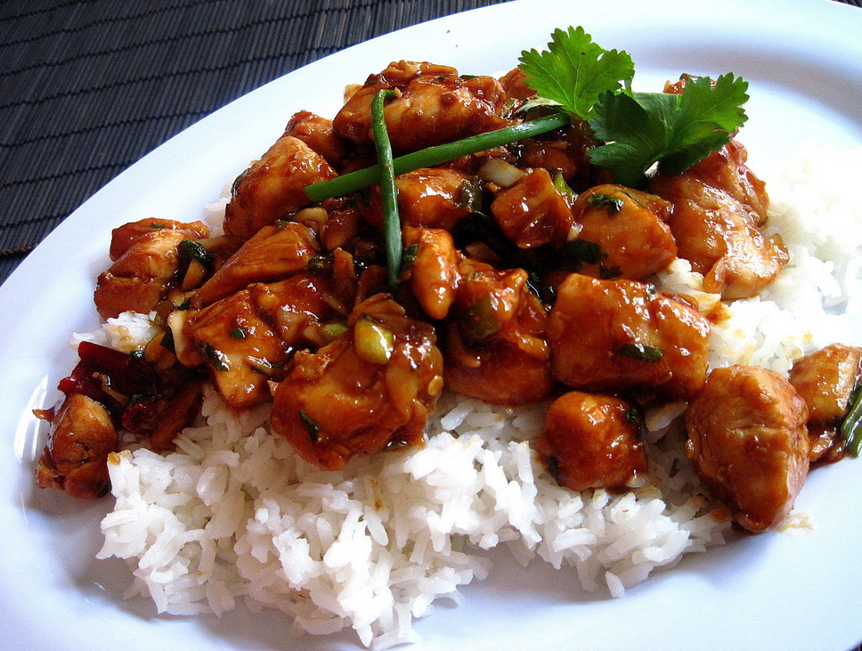

Kung Pao Chicken

Spicy chicken with peanuts, similar to what is served in Chinese restaurants. It is easy to make, and you can be as sloppy with the measurements as you want. They reduce to a nice, thick sauce. Substitute cashews for peanuts, or bamboo shoots for the water chestnuts. You can't go wrong! Enjoy!
Ingredients
- 1 pound skinless, boneless chicken breast halves - cut into chunks
- 2 tablespoons white wine
- 2 tablespoons soy sauce
- 2 tablespoons sesame oil, divided
- 2 tablespoons cornstarch, dissolved in 2 tablespoons water
- 1 ounce hot chile paste
- 1 teaspoon distilled white vinegar
- 2 teaspoons brown sugar
- 4 green onions, chopped
- 1 tablespoon chopped garlic
- 1 (8 ounce) can water chestnuts
- 4 ounces chopped peanuts
Directions
- Step 1
To Make Marinade: Combine 1 tablespoon wine, 1 tablespoon soy sauce, 1 tablespoon oil and 1 tablespoon cornstarch/water mixture and mix together. Place chicken pieces in a glass dish or bowl and add marinade. Toss to coat. Cover dish and place in refrigerator for about 30 minutes.
- Step 2
To Make Sauce: In a small bowl combine 1 tablespoon wine, 1 tablespoon soy sauce, 1 tablespoon oil, 1 tablespoon cornstarch/water mixture, chili paste, vinegar and sugar. Mix together and add green onion, garlic, water chestnuts and peanuts. In a medium skillet, heat sauce slowly until aromatic.
- Step 3
Meanwhile, remove chicken from marinade and saute in a large skillet until meat is white and juices run clear. When sauce is aromatic, add sauteed chicken to it and let simmer together until sauce thickens.
Editors note
The nutrition data for this recipe includes information for the full amount of the marinade ingredients. Depending on marinating time, ingredients, cooking method, etc., the actual amount of the marinade consumed will vary.
Home page